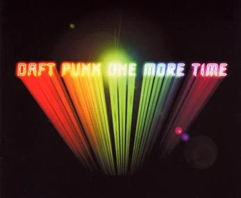
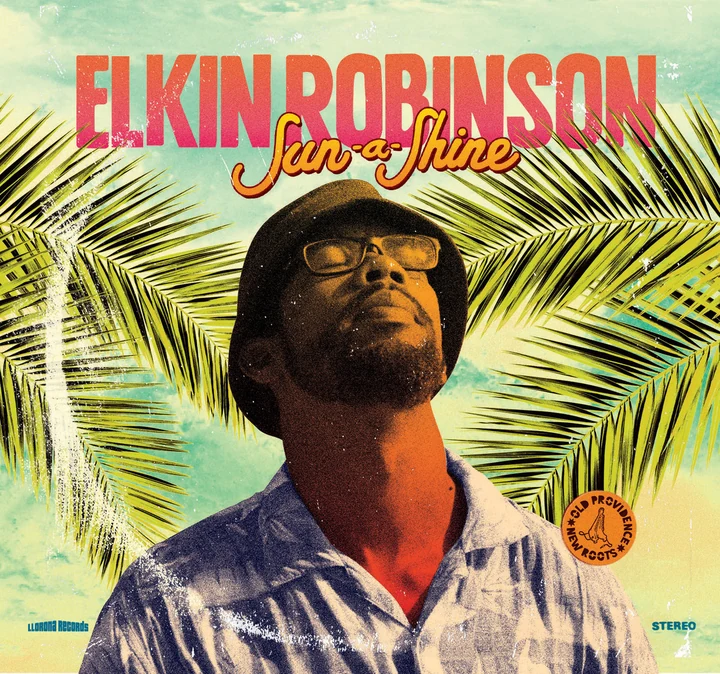
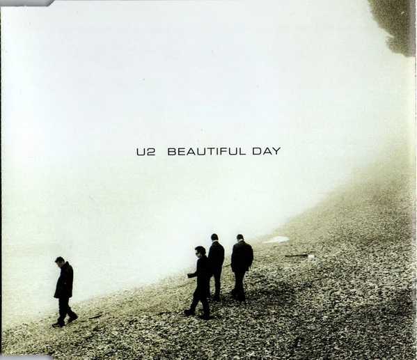

Music is one of the traditional seven arts and probably the most common of them. Artists make an effort to create songs so that listeners can connect with the lyrics and the rhythm. There are not going to be two people with the same playlist because of its variety. In the next section, you will find how music impacts us and you might find out your new favorite song.
Open the playlist (opens in a new tab)
Heart Songs

Chosen by Paulo Paz
One more time by Daft Punk
“One more time
One more time
One more time, we’re gonna celebrate
Oh yeah, alright, don’t stop the dancing
One more time, we’re gonna celebrate
Oh yeah, alright, don’t stop the dancing”
Thoughts
This song reminds me of my mom because she listens to this tune a lot even nowadays. Yet, the moment when I was hooked on it was when I watched its videoclip. It was basically an animation clip where the people were celebrating and dancing while a secret invasion started and they did not notice. Finally, I ended up liking the song and I currently have that song on my playlist and I always remember the videoclip while I am listening to it.

Chosen by Jeancarlo
Sun a shine by Elkin Robinson
Let’s get up fine fine fine fine fine
It’s time to see the sunshine
It’s a new day today, gonna find a place to play
It’s time to see the sunshine
Come on and shine shine shine
Oh you bright new light o’ mine
Colour in the world again
I see green leaves on the trees
Big leaves will give us shade to dig and plant the seeds
A feel good about today
Gonna make a little time to play
You smile at the blue sky
Turn to me and say
Thoughts
This song reminds me of being positive, especially when I wake up in a bad mood or I just have a bad day. This song always sparks a better mindset in me. For example, the first time that I listened to the song, it was in the pandemic when I was very anxious because of the quarantine, and the song had a significant impact on me on how I was dealing with that situation.

Chosen by Juan
Beautiful Day U2
It’s a beautiful day
Sky falls, you feel like
It’s a beautiful day
Don’t let it get awayYou’re on the road, but you’ve got no destination
You’re in the mud, in the maze of her imagination
You love this town even if that doesn’t ring true
You’ve been all over, and it’s been all over you
Thoughts
This song evokes a sensation of freedom on a sunny day. Everything is okay, so enjoy the moment. The lyrics are definitely an expression of this feeling. Besides, this reminds me of the high school era which was a period to discover new perspectives. Also, music has been a company for my entire life, and I remember playing this song when I commuted from the school to my house. I used to spend one hour walking in the countryside, and I did it often alone, so, it was me and these lyrics reminding me that life is good.
Chosen by Santiago
If we have each other by Alec Benjamin
I’m 23, and my folks are getting old
I know they don’t have forever, and I’m scared to be alone
So, I’m thankful for my sister, even though sometimes we fight
When high school wasn’t easy, she’s the reason I survived
I know she’d never leave me and I hate to see her cry
So, I wrote this verse to tell her that I’m always by her side
I wrote this verse to tell her that I’m always by her side
I wrote this verse to tell her that
Thoughts
I love this part of the song because it shows us how important the family is. Furthermore, it reminds us to appreciate the people we love because we don’t know how much time we have left with them. Finally, it makes us realize that we’ll always have important people that will be there for us.
The playlist
- Audio not available
- Audio not available
- Audio not available
- Audio not available
- Audio not available
- Audio not available
- Audio not available
- Audio not available
- Audio not available
- Audio not available
- Audio not available
- Audio not available
- Audio not available
- Audio not available
- Audio not available
- Audio not available
- Audio not available
- Audio not available
- Audio not available
- Audio not available
- Audio not available
- Audio not available
- Audio not available
- Audio not available
- Audio not available
- Audio not available
- Audio not available
- Audio not available
- Audio not available
- Audio not available
- Audio not available
- Audio not available
- Audio not available